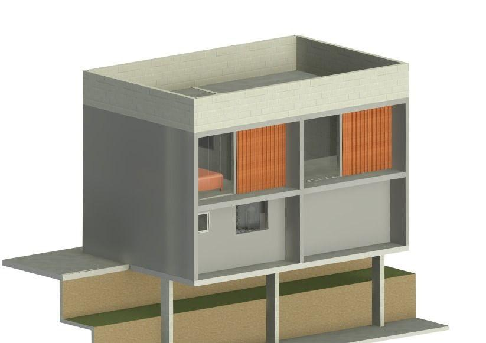
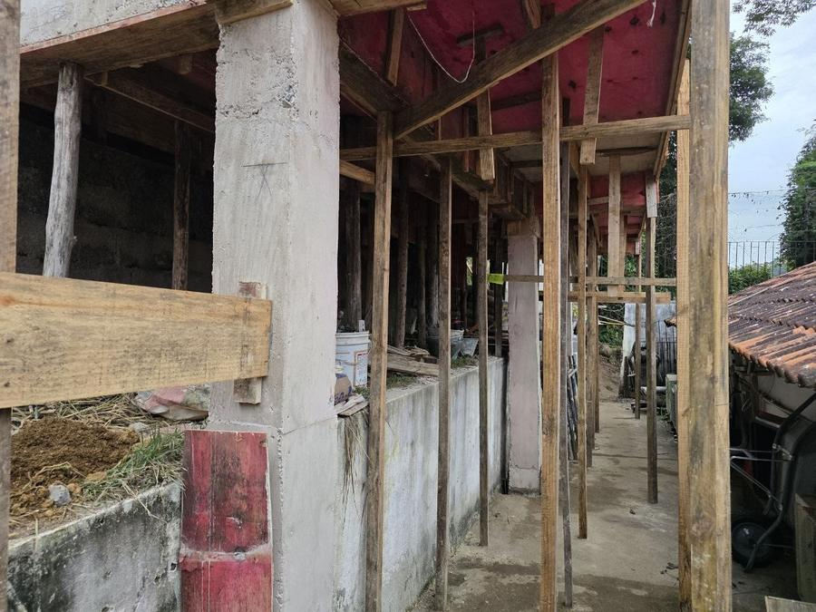

Desenvolvimento do projeto: o caminho até os primeiros apartamentos
Muitas famílias do Rio não conseguem pagar por uma casa própria. O primeiro projeto da IMOBX lá tem seis passos, da estimativa de custo até cinco apartamentos novos.
Onde estamos agora: seis passos, em ordem
Estamos formando o círculo de fundadores e montando a cooperativa; a estimativa de custos é o primeiro passo.
1Custos estimadosUma estimativa do custo de um apartamento e de cinco.
2PreparandoEscolhemos um advogado, um contador e um engenheiro independentes, e um terreno. Os fundadores pagam os primeiros custos.
3Registrar a cooperativaRegistramos a cooperativa, fazemos um pagamento de teste e separamos uma reserva para as contas.
O custo de um apartamento e de cinco, estimado pelo índice público de custo da construção do Rio (CUB), em setembro de 2026.
Precisa de: O índice público de custo da construção do Rio (CUB). O orçamento detalhado vem antes da obra, no passo 6.Custos e recursos
2Preparando
O Rafael nomeia um advogado, um contador e um engenheiro, todos independentes da construtora dele, com o acordo dos dois cofundadores. Eles conferem os contratos e a obra.
Os fundadores pagam os primeiros custos por conta própria; o que eles cobrem está em Custos e recursos.
A meta da campanha segue o padrão do índice público de custo da construção (CUB) que vale para um prédio pequeno de cinco apartamentos.
O terreno, de 200 a 300 m², será escolhido em Anchieta, Pavuna, Bangu ou Santa Cruz.
Precisa de: Advogado, contador e engenheiro independentes escolhidos, e um terreno.Quem decide
3Registrar a cooperativa
Fazemos um pequeno pagamento de teste e conferimos com o extrato do banco.
Separamos uma reserva para as contas e para os compromissos com as famílias. Se ela baixar, os gastos novos esperam.
Precisa de: Um caminho jurídico para o registro, confirmado por um advogado.Termos e leis
4Campanha de financiamento coletivo
Escolhemos a plataforma, escrevemos as recompensas, definimos a meta e abrimos a campanha de financiamento coletivo.
Precisa de: A cooperativa registrada, e uma plataforma que aceite a campanha.Recursos
5Uma família assina
Se a família topar, ela assina um contrato de aluguel com compra do apartamento em que mora, no prédio de Guadalupe.
Os moradores ajudam a escrever as regras da casa, e uma regra só começa depois que eles opinarem.
Precisa de: O consentimento da família, um acordo escrito e a prova de quem é dono do prédio.Aluguel com compra
6Construir cinco apartamentos
Construímos cinco apartamentos de cada vez.
Precisa de: O custo total na conta, um orçamento detalhado e as licenças.Custos e recursos
Uma família já aluga um apartamento lá, e gostaríamos de lhe oferecer um contrato de aluguel com compra, com aluguel menor. Isso ainda não está combinado.
Um imóvel pode entrar quando três coisas estiverem no papel: de quem é o imóvel, um acordo escrito com a IMOBX e o consentimento da família.
Como os cinco primeiros apartamentos serão financiados?
O Rafael estima os cinco primeiros apartamentos em cerca de R$892.000, com um terreno de 200 m².Planejamos financiar o primeiro prédio novo nesta ordem.
Financiamento coletivo em reaisAssim que a cooperativa estiver registrada, ela abre uma campanha numa plataforma brasileira, como a Benfeitoria. Os apoiadores recebem as recompensas que a campanha oferece. O token da IMOBX é uma etapa separada, mais adiante.
Financiamento ligado ao ODS 11Vamos pedir financiamento ligado ao ODS 11, o objetivo da ONU para cidades e comunidades sustentáveis.
Outros financiadoresVamos pedir apoio também a fundações que financiam o desenvolvimento sustentável, aos programas de desenvolvimento da cidade e a financiadores cripto.
A Olympus, a construtora do Rafael, é a construtora proposta para a IMOBX. Em janeiro de 2026, ela assinou um contrato para construir dois lofts, uma obra própria, com projetos e agenda dela. As imagens abaixo mostram como a equipe do Rafael trabalha.

Modelo 3D dos dois lofts, da construtora do Rafael, janeiro de 2026.

Escoras de madeira seguram a laje entre os pilares de concreto.
A IMOBX cresce em três etapas. Cada etapa começa quando a anterior tiver mostrado resultados para as famílias que moram ali: apartamentos construídos dentro do orçamento e cada pagamento feito pela IMOBX aberto para conferir.
Tudo o que está no caminho acima faz parte da etapa 1.
Etapa 1
Um piloto local
Os primeiros apartamentos no Rio, geridos no local e sem sistemas online. O plano é que as famílias paguem em reais e uma segunda pessoa confira cada pagamento.
Etapa 2
Mais bairros, online
A IMOBX abre mais bairros e poderá guardar pagamentos e aprovações num registro distribuído.
No plano, o token da IMOBX é lançado nesta etapa. A taxa de cada negociação paga o trabalho da comunidade e os apartamentos novos.
Começa:quando os primeiros apartamentos estiverem prontos dentro do orçamento, com famílias morando neles. A moradia também precisa de uma renda própria que se mantenha nas altas e baixas do mercado.
Etapa 3
Uma economia distribuída
Esta etapa constrói apartamentos novos mais depressa do que as famílias terminam de comprar os seus, e donos de imóveis adequados podem entrar. Nossa meta é chegar a cerca de 1.000 moradias em 10 a 15 anos, pela nossa estimativa.
Se a lei brasileira permitir, a renda da moradia pode então ir também para o fundo comunitário. Esse fundo paga o trabalho da comunidade e apartamentos novos.
Também queremos uma moeda comunitária estável que mantenha os serviços, inclusive para as famílias que já quitaram o apartamento. A família deve poder vender o apartamento de volta à cooperativa, para que ela fique na comunidade.
Começa:quando o que as famílias devolvem a cada ano bastar para construir apartamentos novos sem recursos de fora.
Como poderia ser a vila que imaginamos, mais adiante?
Imaginamos uma vila de pequenos prédios com apartamentos de 45 m² em volta de um pátio comum, com energia solar, um pomar e lugares para brincar e estudar. É uma etapa posterior.
Quais termos e leis valem?
Onde a IMOBX está hoje
A IMOBX ainda está em preparação, então ainda não há apartamentos para alugar ou comprar.
A cooperativa habitacional ainda não está registrada.
A própria IMOBX ainda não assinou nenhum contrato.
Nenhuma autoridade pública aprovou ainda os planos da IMOBX.
Apartamentos e famílias
O preço, o valor mensal, o prazo e quem pode participar são definidos para cada projeto, num contrato escrito, antes de qualquer mudança.
O apartamento passa para o nome da família quando as condições do contrato forem cumpridas, e o Código Civil brasileiro decide o momento em que ele passa legalmente a ser dela.
Tudo o que uma família recebe como promessa, como uma devolução, mais prazo para pagar ou um desconto, vale quando estiver escrito no contrato assinado.
Nenhuma votação pode mudar o contrato de moradia de uma família: só a família e a IMOBX juntas podem, dentro da lei brasileira.
Recursos
Depois dos primeiros custos dos fundadores, os recursos vêm primeiro de uma campanha de financiamento coletivo em reais, e depois de financiamento ligado ao ODS 11.
Só começamos a construir quando os recursos para isso estiverem no banco.
Leis
Três conjuntos de regras brasileiras definem como a IMOBX é montada: o cadastro na Receita Federal; o Código Civil; e a Lei 13.019, que vale se a IMOBX trabalhar com um órgão público, como a prefeitura.
Quem decide em cada etapa, e o que estamos decidindo agora: Governança local.
Você pode ajudar com uma pergunta em aberto?
Vamos resolver as perguntas em aberto, como o terreno dos apartamentos novos e o preço para as famílias, com as pessoas que participarem. Se você pode ajudar com uma delas, apresente-se.